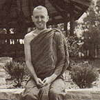

|
ENLIGHTENED  |
Venerable Brahmavamso (Peter Betts) was born in London in 1951. His
first contact with Buddhism came while browsing in a book shop in London
while still at school. He went to Cambridge University to study physics,
during which time he became a member of the local Buddhist society and
started to practise meditation. After graduating with First Class Honours,
he taught physics for a while at a secondary school in Devon. However,
his contact with Thai bhikkhus in London inspired him to go to Thailand
to take up the bhikkhu life himself, and he received bhikkhu ordination
at Wat Sraket at the age of 23, with Tan Chao Khun Prom Gunaphorn. |
|
Venerable Brahmavamso offers some reflections on his spiritual journey
over the years. WHEN I WAS VERY YOUNG I WANTED DESPERATELY to become a train driver. My grandfather had taken my brother and me to Euston Station in London where I began an infatuation with those massive, black and green steel machines that hissed, with so much strength. Wouldn't it be wonderful, I dreamt, one day ... if... Some years later I wanted desperately to become enlightened. I had read all about it in the books. To a starry-eyed young man, the idea of living in permanent bliss and saving humanity at the same time was irresistibly appealing. Wouldn't it be wonderful, I used to dream, one day ... if... When I first heard the story of the Lord Buddha's enlightenment,
I was still many glasses of beer away from being a monk. I was a student,
doing most of those outrageous activities students enjoyed in the late
sixties -- and regretted in the late seventies. But I had been meditating
off and on -- mostly the former -- for some time, and I had begun to notice
some unmistakable changes in my daily life. I was attending the Vesak
celebration at the local Buddhist Society and as the Venerable Sri Lankan
monk was reading out the Enlightenment Story, I became more and more
inspired and excited. I especially relished the bit where the Buddha-to-be
sat at the root of the Bodhi Tree and made that earth-shaking resolution: Thus it was that I, in the arrogant stupidity of youth,
a novice meditator who could hardly manage to sit still for thirty minutes,
decided that it was time to become enlightened. It was now or never,
I resolved, for the next day I had an exam. I locked the door of my
room. I sat down on my meditation cushion. I collected myself. Then
I pronounced in a low, clear, solemn voice: Forty minutes later I was in extreme agony. Though my blood appeared as liquid as ever and no disintegration of my bones was discernible yet, my knees were giving me hell! What was really worrying me though, was that over half an hour had gone by and I hadn't seen the anticipated brilliant and flashing lights yet. There hadn't even been a twinkle to suggest that I was getting near. It was very depressing -- and very painful. I gave in. I got up very disappointed. Not becoming enlightened had spoiled the whole day. A few years later and a little more sensible -- though only a little -- I was at London airport being sent off to Thailand by two Thai bhikkhus. I was going to Bangkok to be ordained. I still remember the parting words of the senior bhikkhu, who was my teacher then: 'Please come back when you become enlightened.' I was planning to be a monk in Thailand for two years at most. I had told my relatives and friends that I'd be back within two summers. After all, two whole years as a Buddhist monk in Thailand -- surely that is long enough even for those of slow intelligence to become enlightened. As for me, I had a degree from university, so there was no doubt in my mind that I would be back in England within two years, enlightened. Once I had got that out of the way, I planned to get married and go live in a commune -- in Wales of course. I had made enquiries before I left. Two years down the track, it was becoming obvious that this enlightenment business might not be so easy. For some reason, though I was a Westerner with a good degree from a top university, I was acting more stupidly than the Thai monks who had barely finished grade four in village schools. My conceit was taking a fair hammering. The strange thing was that, even though I still wasn't enlightened, I was enjoying the peace, simplicity and morality of monastic life. I didn't want to leave. What I had in mind to do on the commune in Wales had lost its appeal. In my fourth Rains Retreat I was pulling out all the stops. Word had come to Thailand that Chithurst House had been bought, a Sangha was being established in England and they needed more bhikkhus. This would be a great time to become enlightened. I was in a very quiet monastery. My meditation practice was in high gear. All the omens were favourable. Then it happened! Walking on my meditation path one evening, my mind already calm from many hours of sitting, I suddenly understood the cause of all problems and my heart immediately felt the joy of release. All around seemed brilliant. Bliss filled my whole being. Energy and clarity were there in abundance. Though it was late at night I sat in meditation perfectly mindful, perfectly still. Then I lay down to rest, sleeping oh-so-lightly for just a few hours. I rose at 3 a.m. and was first in the grass Meeting Hall for the morning meditation. I sat through until dawn as if without effort and without the slightest drowsiness. That was it! It was immeasurable joy being enlightened. Pity it didn't last long. The monastery where this happened was very poor and the food was very coarse. It was the sort or North-eastern Thai monastery where you were happy to eat just one meal a day -- facing such an ordeal twice in one day being beyond the pale! The morning after my experience of 'release', though, the fare was more reasonable. Along with the staple 'rotten-fish curry', which is actually made from stewing small fish which have been kept most unhygienically until they go 'off', there was a saucepan of pork curry. That day even the Thai abbot visibly reacted at the sight of the reeking fish stew and took a whopping big helping from the pot of pork curry. I didn't mind; I was second in line and there was plenty left for me. However, the pot of pork never reached me. Instead, the abbot poured what was left of the pork curry into the mess of rotten fish stew and stirred it all up saying that it all gets mixed up in the stomach anyway. I was incensed! Of all the hypocrites! If he really thought that, then why didn't he mix the curries before he took out his share. I peered angrily into the saucepan he handed me -- rotten smelly pieces of rubbery fish swimming alongside my delicious pork -- my one lucky meal ruined. Oooh, that abbot, was I mad at him! Was I angry! Then a thought struck me with a depressing thud, or rather a sickening squelch -- maybe I wasn't enlightened at all. Enlightened beings aren't supposed to get angry. Arahants don't care if they eat putrid fish or delicious pork. I had to admit I was angry -- therefore I had to own up that I wasn't enlightened. What a let-down. Utterly depressed, I scooped a ladle of rotten fish cum pork into my bowl. I was too disappointed to notice the taste of what I ate that day. In spite of these spiritual hiccups coming from Dhamma-indigestion (a poor ability to assimilate the Teachings), my following years as a bhikkhu were definitely producing results of more tranquillity, clarity and joy. It was the humble insights, the sort which arrive without a fanfare, which were proving the more effective. My wish to become enlightened now appeared suspiciously akin to my childish wish to become a train driver, or to my later ambitions to become the first English astronaut ... a professional footballer ... a lead guitarist in a rock band ... the greatest lover in my college ... (I am too embarrassed to mention my other aspirations). In a way, wanting to become enlightened was even more foolish. At least I had some idea of what driving a train was about. As for enlightenment, I wasn't quite sure what that was! And whenever I would try to find out by asking one of the senior monks, I would never get a straight answer. So there I was in a very foreign land, eating rotten fish and things much worse, enduring ravenous mosquitoes and unending heat, trying so hard and giving up so much -- and for what? I wasn't quite sure. So the only rational thing to do was to give up trying to become enlightened until I knew what enlightenment was! I didn't want to give up being a bhikkhu, I understood that and it made sense. I just had to let go of chasing my fantasies, and my idea of enlightenment was the ultimate fantasy. On the other side of insight one seldom thinks that one is now wise, for one is overwhelmed by the thought of how stupid one has been. How could I have been so thick? It is written in so many of the Buddhist scriptures, and it is emphasized by so many fine teachers, that BECOMING IS SUFFERING -- becoming anything. The Buddha, speaking as plain as ever, thundered that he didn't recommend ANY becoming. Becoming is what the ego does all day. Becoming fashions the identity. Becoming is the 'skin' which holds together the bubble of self. Stop all becoming and the illusion is shattered. So that was the end of my becoming enlightened. I focused
instead on the question of WHO it was who wanted to become enlightened,
if there was anyone there at all? I investigated no-self, which is much
more illuminating than trying to become enlightened. But still people
ask me, as they do of other bhikkhus, the bottom-line question: Are
you enlightened? Now I have a splendid answer, which I plagiarise from
the late Venerable Ananda Mangala Mahanayakathera (I know he won't mind)
who, terrific teacher that he was, gave the perfect reply to this very
question: |
| Home Page |